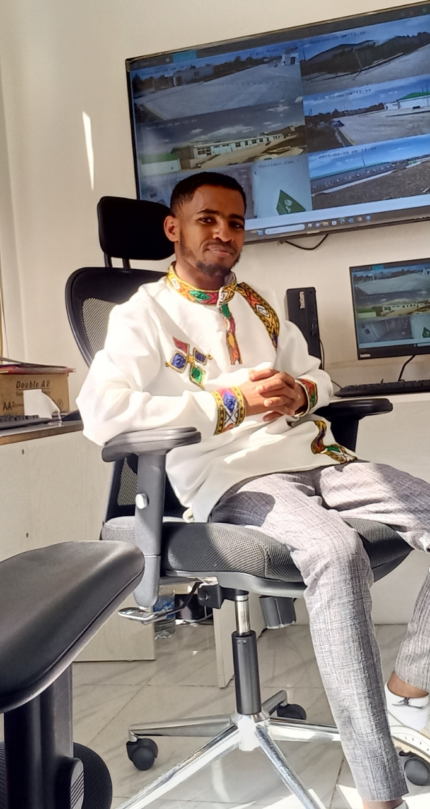

Work Gallery



Welcome to My Professional Portfolio I am Hiruy Andualem, an IT professional currently building my career and expanding my technical expertise. I presently serve as an IT Expert in a focused branch, where I am gaining hands-on experience in computer troubleshooting and technical support. I am passionate about the evolving world of technology and am actively working toward specializing in the Networking field. I thrive on solving daily technical challenges, learning from industry peers, and continuously improving my skills to provide better user solutions. My goal is to combine my practical experience with advanced networking knowledge to build a strong foundation for the future.
I am a profession with a BSc in Information Technology from Assosa University. My experience includes working as a Control Room Operator for Safaricom Ethiopia through Edomias International PLC, focusing on monitoring and incident tracking. Currently, I serve as an IT Officer at POESSA, handling hardware, software, and network troubleshooting. I am dedicated to maintaining system uptime through proactive maintenance and technical user support.
Education:
Key Experiences:

Email: hiruyandualem@gmail.com
Phone: +251922292383
LinkedIn: www.linkedin.com/in/hiruyan